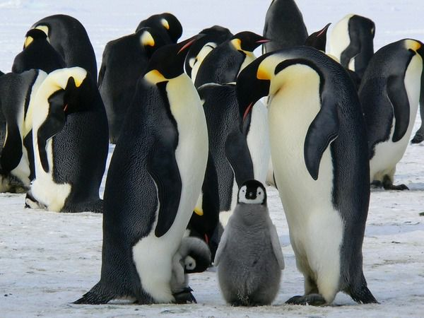

|
Головні новини |
Хоча обидві сторони заперечують, що в цьому є політика, Китай давно використовує "дипломатію панд", щоб заслужити прихильність, винагородити союзників і покарати супротивників. І потенційна втрата останніх американських панд відбувається в той момент, коли зв’язки між США та Китаєм досягли історичного мінімуму, коли більшість шляхів співпраці перервано.
.jpg)
Під час експерименту вчені планують взяти клітини жирнохвостої сумчастої миші (даннарта), саме вона має найбільш схожу ДНК із усіх видів, які нині існують, і за допомогою технології редагування генів перетворити їх на "тилацинові". Потім вченим необхідно буде створити ембріон і помістити його до штучної матки чи сурогатної матері Даннарта. Якщо експеримент виявиться вдалим, вирощену особину планують повернути до її рідної екосистеми Австралії.
На станції “Академік Вернадський” з'явилися перші пінгвінятка цього року.
«Нині із перших відкладених на початку листопада 11 яєць народилося 8 малюків. Є родини, в яких вилупилося вже по два пінгвіняти, а є такі, де одне дитинча ще очікує на появу брата чи сестри»,
— йдеться в повідомленні.